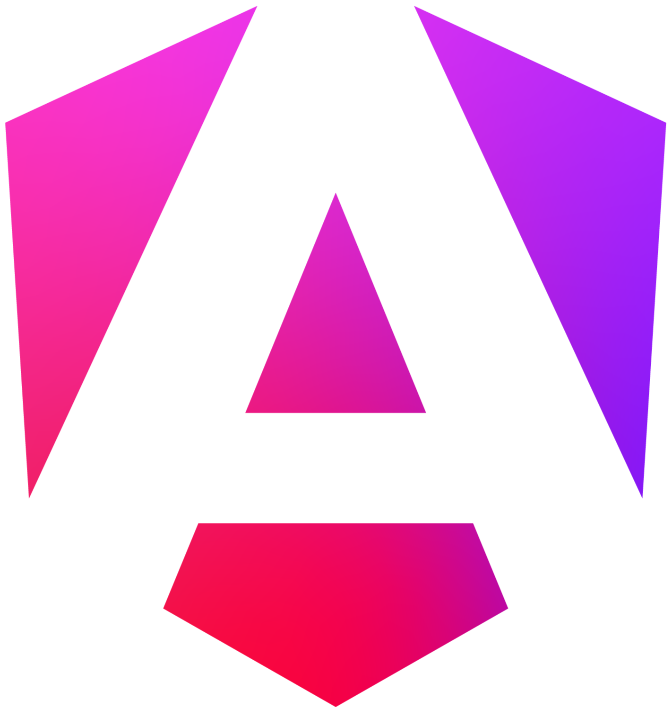

Framework Angular
Quando devemos utilizar?
Saiba quando e por que usar o Angular. Neste site, exploraremos seus principais benefícios, empresas que o utilizam, e comparações com outros frameworks como React e Vue, para ajudá-lo a escolher o melhor para o seu projeto.

O que é o Angular?

{{ slide.title }}
{{ slide.subtitle }}
O Angular é um framework de código aberto para o desenvolvimento de aplicações web, criado e mantido pelo Google. Lançado oficialmente em 2016, o Angular surgiu como uma evolução do AngularJS, que foi introduzido em 2010. Diferente de seu antecessor, o Angular foi completamente reescrito, utilizando TypeScript como linguagem principal, o que trouxe melhorias significativas em termos de desempenho, modularidade e facilidade de manutenção.
O objetivo do Angular é facilitar o desenvolvimento de aplicações dinâmicas, especialmente aquelas conhecidas como Single Page Applications (SPAs), onde o conteúdo é carregado de forma rápida e fluida, sem a necessidade de recarregar a página inteira. Com sua arquitetura baseada em componentes e ferramentas integradas, o Angular oferece uma estrutura robusta para criar interfaces de usuário modernas, interativas e altamente escaláveis.
Além disso, o Angular conta com um ecossistema completo, incluindo ferramentas para testes, roteamento, injeção de dependências e muito mais. Sua popularidade se deve não só ao suporte contínuo do Google, mas também à sua grande comunidade de desenvolvedores que contribuem para a evolução constante do framework.
Hoje, o Angular é amplamente utilizado por grandes empresas ao redor do mundo, especialmente em projetos que exigem escalabilidade, manutenção a longo prazo e uma experiência de usuário rica e responsiva.